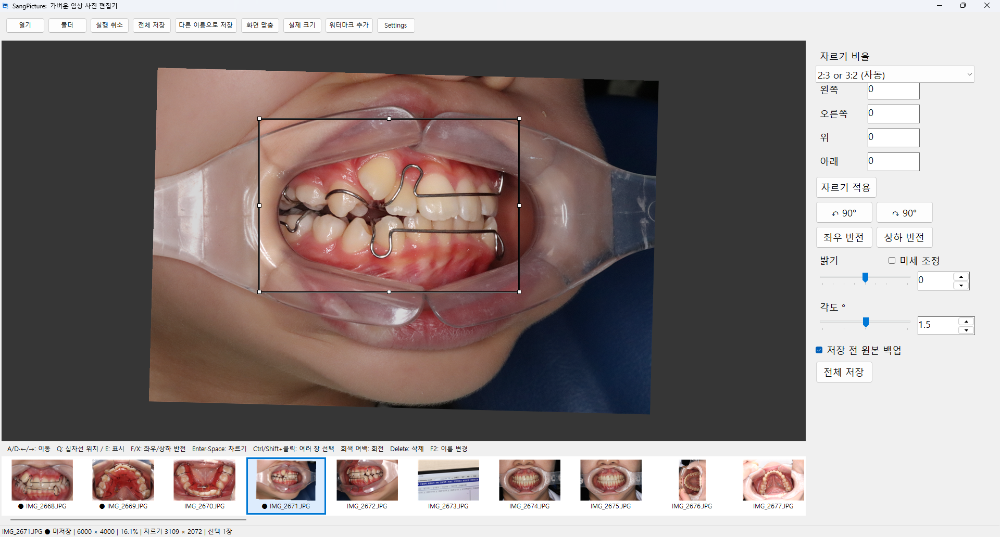
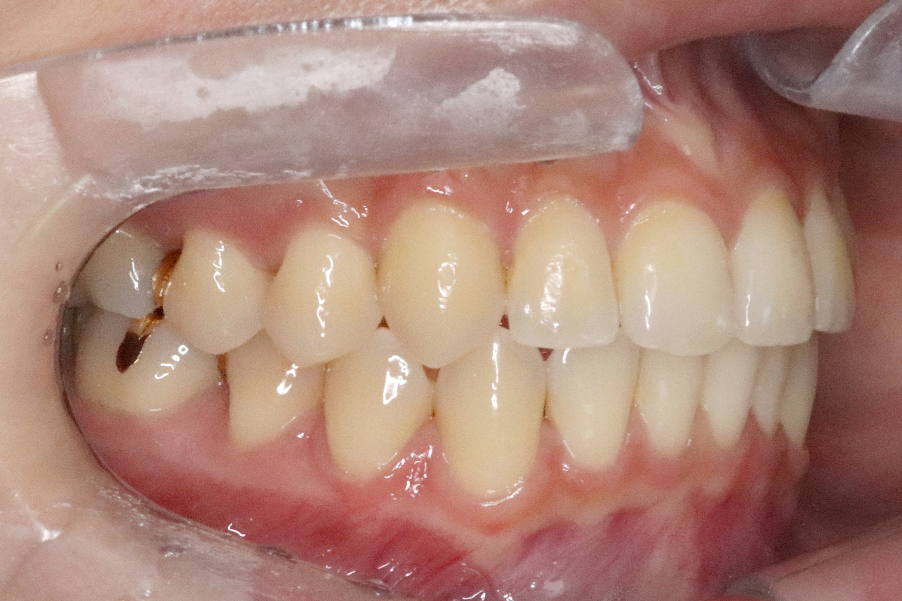
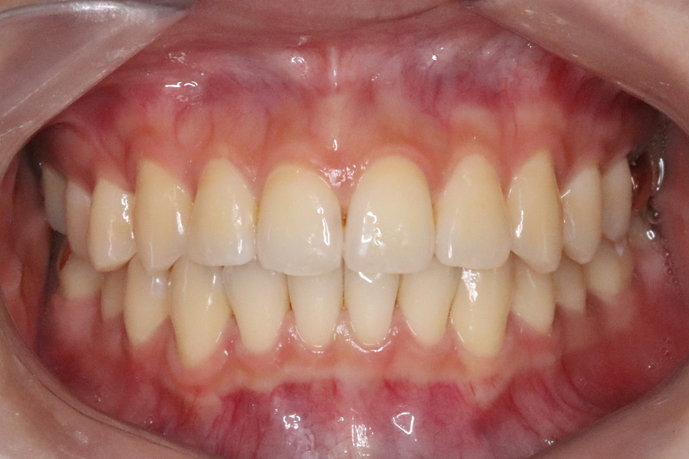
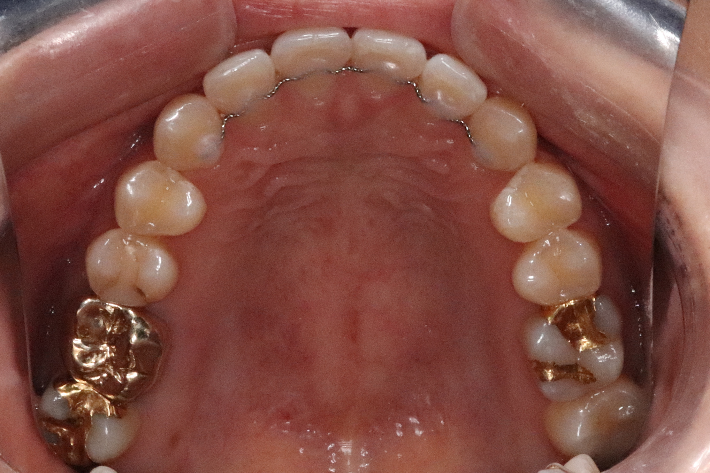
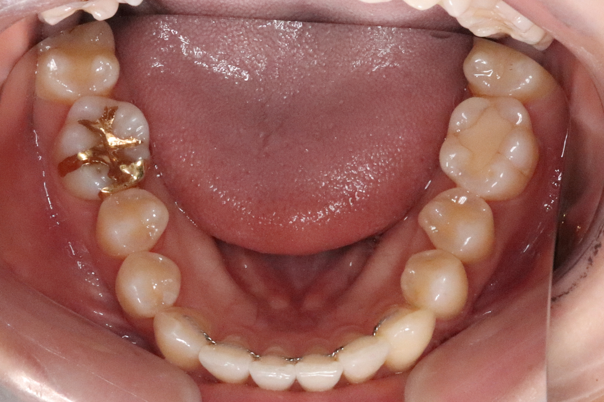

여러 사진을 빠르게 편집
A / D 키로 이동, 회전하고 영역을 선택한 뒤 Space로 자르기! 밝기도 한 화면에서 모두 설정할 수 있습니다.
SangPicture · Windows
쓸만한 가벼운 사진편집 프로그램이 없어서 직접 만들었습니다.
여러분의 임상에 많은 도움이 되길 바랍니다.
설치 파일은 GitHub Releases에서 제공합니다.
최신 업데이트
개발 예정
사진 작업이 더 간편해지도록, 다음 기능을 추가할 예정입니다.
개발에는 시간이 필요하며, 출시 시기는 아직 미정입니다.
핵심 기능
사진 이동부터 자르기, 회전, 밝기 조절까지 한 화면에서 빠르게.

A / D 키로 이동, 회전하고 영역을 선택한 뒤 Space로 자르기! 밝기도 한 화면에서 모두 설정할 수 있습니다.

영역 선택 → Space제거할 픽셀 수를 직접 입력하거나, 자르기 영역을 드래그해서 조절하세요. 비율을 고르고 Space / Enter로 확정!

Q : 위치 설정 · E : ON / OFFQ 키로 마우스 위치에 십자선 설정, E 키로 켜고 끄기. 사진의 수평을 맞출 때 편리합니다.

회전 · 각도 조절
F : 좌우 · X : 상하90° 버튼이나 각도 입력으로 회전. 회색 여백을 드래그해 미세하게 조절할 수도 있습니다. F는 좌우, X는 상하 반전!
슬라이더를 움직이거나 숫자를 입력해 밝기 조절. ‘미세 조정’을 체크하면 대조와 중간톤도 따로 설정할 수 있습니다.
Ctrl / Shift + 클릭으로 여러 장 선택. 함께 편집하거나 사진마다 편집한 뒤 Ctrl + S로 수정한 사진 모두 저장!
원본을 덮어씁니다. 보관하려면 ‘저장 전 원본 백업’을 체크하세요. 자르기는 먼저 확정!
‘Settings’에서 로고 이미지와 위치·크기를 설정하고 ‘워터마크 추가’를 클릭. 선택한 사진에 내 로고를 넣을 수 있습니다.
썸네일을 오른쪽 클릭해 이름 변경, 삭제, 속성 확인. F2로 이름을 바꾸고, Delete로 휴지통에 보낼 수 있습니다.
사진 영역을 클릭한 뒤 사용하세요. 숫자 입력 중 Enter / Space는 입력값을 확정합니다.
| 키 / 마우스 | 기능 |
|---|---|
| Ctrl + O | 사진 열기 |
| A / ← · D / → | 이전 / 다음 사진 |
| Ctrl / Shift + 클릭 | 개별 / 연속 범위 선택 |
| Ctrl + Shift + 클릭 | 기존 선택에 범위 추가 |
| Space / Enter | 자르기 확정 |
| Esc | 미확정 자르기 영역·픽셀 입력 초기화 |
| F / X | 좌우 / 상하 반전 |
| Q / E | 십자선 위치 설정 / 켜기·끄기 |
| Ctrl + Z | 현재 사진의 편집 취소 (저장 전) |
| Ctrl + S | 수정한 사진 전체 저장 |
| F2 / Delete | 이름 변경 / 확인 후 휴지통으로 |
| F5 | 현재 폴더 다시 읽기 (미저장 편집 확인) |
| 휠 / 휠 버튼 드래그 | 확대·축소 / 화면 이동 |
| 회색 여백 드래그 | 미세 회전 |
프로그램 화면
사진 폴더를 탐색하고 자르기, 회전, 반전, 밝기 조절을 빠르게 처리하는 SangPicture의 실제 작업 화면입니다.
실제 프로그램 화면
최신 버전
버전 정보를 준비 중입니다.
Windows x64 설치 파일은 GitHub Releases에서 내려받을 수 있습니다. 설치 파일 자체는 이 웹사이트 저장소에 포함하지 않습니다.
Windows x64 설치 파일 받기공식 다운로드 주소를 준비 중입니다. 아래 설정 영역의 placeholder를 실제 GitHub 주소로 바꿔주세요.
설치 후에는 Release에 함께 올린 SHA-256 해시 파일과 설치 파일의 해시를 비교해 보세요.
만든 사람
임상에서 사진을 정리하고 반복해서 편집하는 시간을 조금이라도 줄이고 싶어 SangPicture를 만들었습니다.
약력
응원하기
SangPicture가 임상에 도움이 되었다면, 다음 업데이트를 이어갈 수 있도록 응원을 보내주세요. 작은 후원도 큰 힘이 됩니다.
PayPal로 후원하기PayPal 주소를 준비 중입니다. script.js의 설정 영역에서 주소를 교체해 주세요.